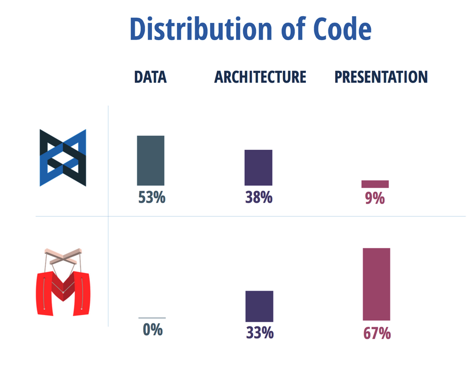

Marionette.js

The Backbone Framework
Marionette is...
An extension framework on top of Backbone.
It simplifies your Backbone application code with robust views and architecture solutions.
Add as You Go
Marionette is not an all or nothing thing. You can add it as you need on top of a large app regardless of what it is built with.
And you can build on top of it.
What Backbone Gives You
- Models
- Views
- Collections
The Backbone Trap
But Backbone does not help you so much on the view layer.
Render
Implementing your own render solution
render: function(){
this.$el.html(`....`)
}
Marionette is View-centric
- Views are the focus
- Render is taken care of for you
- + several components to help you build complex apps
